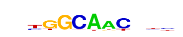

| p-value: | 1e-45 |
| log p-value: | -1.049e+02 |
| Information Content per bp: | 1.608 |
| Number of Target Sequences with motif | 157.0 |
| Percentage of Target Sequences with motif | 9.33% |
| Number of Background Sequences with motif | 1084.0 |
| Percentage of Background Sequences with motif | 2.38% |
| Average Position of motif in Targets | 52.8 +/- 15.8bp |
| Average Position of motif in Background | 50.0 +/- 37.2bp |
| Strand Bias (log2 ratio + to - strand density) | 10.0 |
| Multiplicity (# of sites on avg that occur together) | 1.04 |
| Motif File: | file (matrix) reverse opposite |
| Rank | Match Score | Redundant Motif | P-value | log P-value | % of Targets | % of Background | Motif file |
| 1 | 0.853 |  | 1e-42 | -96.959158 | 31.43% | 17.66% | motif file (matrix) |
| 2 | 0.791 | 1e-35 | -80.996828 | 25.67% | 14.10% | motif file (matrix) | |
| 3 | 0.647 | 1e-23 | -54.998374 | 9.27% | 3.71% | motif file (matrix) | |
| 4 | 0.753 | 1e-18 | -41.597976 | 2.73% | 0.53% | motif file (matrix) | |
| 5 | 0.745 | 1e-13 | -31.410574 | 1.54% | 0.22% | motif file (matrix) | |
| 6 | 0.715 | 1e-8 | -20.180795 | 6.00% | 3.16% | motif file (matrix) | |
| 7 | 0.670 | 1e-8 | -19.845113 | 0.53% | 0.03% | motif file (matrix) | |
| 8 | 0.602 | 1e-4 | -10.322742 | 7.78% | 5.43% | motif file (matrix) |